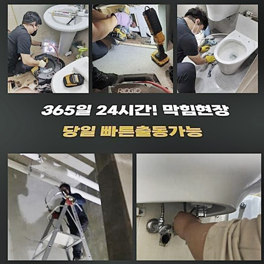
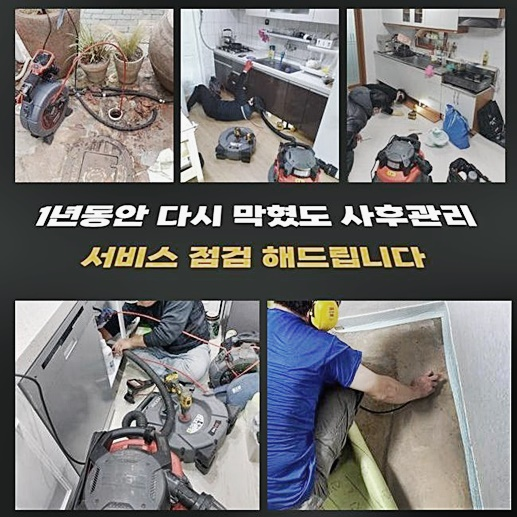
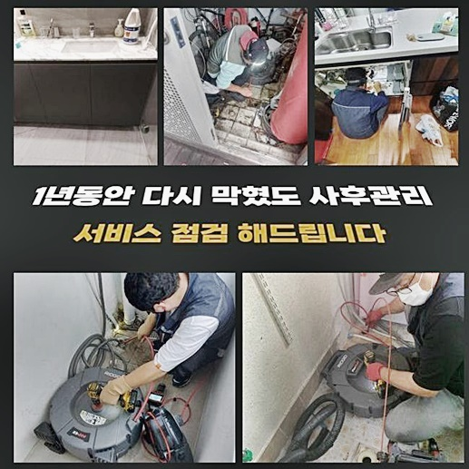
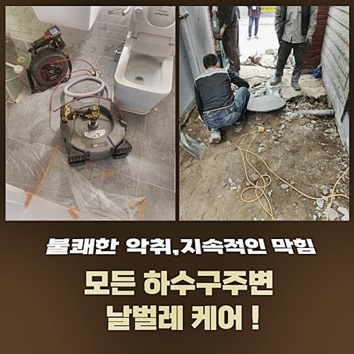
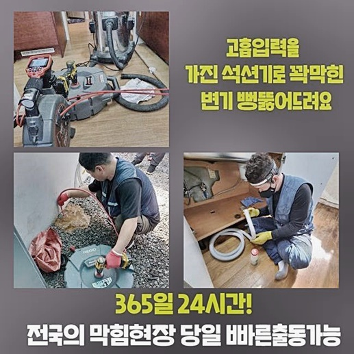

🏠 서초구 잠원동화장실막힘 신원동 하수구뚫는곳 설비
용인 원동 싱크대막힘 전문 시공 후기

📋 작업 개요
- 위치: 용인 원동, 원동, 용인
- 서비스 유형: 싱크대막힘, 하수구막힘, 배관막힘, 맨홀막힘, 누수수리, 뚫는업체, 배관청소, 고압세척
- 작업 일시: 2024. 8. 6. 9:43
- 업체명: 하수구수사대 (010-5615-2118)
🔍 문제 상황
서초구 잠원동화장실막힘 신원동 하수구뚫는곳 설비
출동드린장소는 다세대 건물이었죠
상가건물쪽에서 하수구문제가 시작되었다는건 오랫동안 하수구속에 이물이 퇴적되었을확률이 높은상황이기에 조속하게 처리해야합니다
혹여나 그대로 내버려둔다면 상가건물 전체적으로 피해가확산되고 물을쓰지못해 영업을하시는데 지장이가는 좋지못한결과를 초래하는만큼 신경을써야해요
건물을 관리해주는분께서 점검해보시다가 막히게된것이라는 정보를 받았습니다
자체적방법으로 보유하고있는 장비를 활용하여 직접해결하고자 시도해보았지만 해결될기미를 보이지않아 긴급히 저희들에게 연락주신것이었어요
하수구막힘이 일어났을때 전문장비없이 시도하는조치는 위험한행동이죠
막힘증세가 발생되는 대표적인원인을 말씀드리자면 하수구내부에 쌓여진이물을 꼽을수있죠
셀프적인 방법을통해 배관수리를 강행하신다면 일시적인효과성을 받아볼수는있겠지만 배수관내부 안으로 잔해물질들을 밀어넣어버리는 결과가되면서 오히려상태를 심각하게 만드실수있어요

🔎 원인 분석
💡 전문가 진단: 정밀 진단 장비를 사용하여 슬러지의 고착 여부를 판명하고 타격/세척 작업을 실시했습니다.
겉으로문제를 보이고있다면 상황을 살피신후 조속하게 전문기사의 도움을통해 해결해보시는게 올바른 해결책입니다
다세대건물의 특징상 신속히 해소하지않으면 동시적으로 여러건물에서 막히는일이 발발될겁니다
피해확산이 되는것을 예방하고자한다면 막힌이유를 정확히찾아 제거해주어야 한답니다
문제확인없이 기기들을투입해 작업을 진행하기보단 내시경장비처럼 전문적인장비를 활용해서 배관내부검사를 첫번째로 진행해야만해요
배관카메라는 사람의눈으로 파악하기어려운 하수구내부를 점검해주는 도구인데요
물길을파악하여 점검해본다면 막힘증세를 일으킨지점과 오염물의특징까지 확인이가능하여 정확하게 작업계획을 결정해볼수있죠
현장경험이 풍부하신 기술자가 빠짐없이 곳곳마다꼼꼼히 검수를한결과 메인관을 시작해서 연결되어있는 하수구까지 다양한이물이 쌓인상태를 확인했습니다
하수구안에는 기름때같이 물에녹지못하는 특징이있었던 오염물들이 상당히축적된 상황을 확인했어요
덩어리로 굳게되서 부피가커져버린 상황이었으므로 잘못하다가는 큰피해를 받을뻔한 상태라는걸 알수있었죠
여러곳에서 이물질들이 쌓여있는 상황이라고하면 분쇄장비들과 석션장비를 이용하여 기름슬러지들을 소거시켜야해요

🔧 작업 과정
샤프트기를 활용하면 고착물질들을 분해시키는 효과를볼수있죠
파쇄처리된것을 석션기계로 흡입하는과정을 반복해서 진행해주면 정체되어있던 배수관이 점차 해소가되는 상황을 볼수있을거에요
어느정도로 뚫린뒤 중앙배관이 자리잡고있는 바깥쪽맨홀로 이동하여 배관고압세척기를 투입시킵니다
고압청소과정은 강력한압의 물을통해 오염물을 소거시키기에 딱딱한물질과 부피자체가 커져버린 잔해물들까지도 확실히 없애줍니다
막힘이빈번히 발현된다고 하실경우 간헐적으로 하수구세척을 진행해보실것을 권유드립니다
많은세대가 즐비하고있는 상가라면 관련된문제가 빈번히 발현되고있는만큼 일년동안 한두번정도는 세척을 진행하는게 예방이 가능하다는것을 알고계시면 좋을것같아요
청소효과를 확실히 만끽하고자 한다면 살피셔야할것들이 존재합니다
하수구는우리가 아는것과는 달리복잡하게 이루어져있으며 내구도가좋지않은 상황일가능성이 높기에 무조건적인 강력한수압을 가하게되면 배관손상이 발발되어 누수같이 복합적인문제들로 이어지게된답니다
수리과정에서 발현될수있는 상황을방지하고 안전하게 작업과정이 이루어지려면 배관의구조와 특징들을 정확하게 이해해야하고 세척진행시 구간마다 서로다른 압력을 이용하는것이 좋아요
정기적으로 하수구점검이 진행되지않아서 그런가 예상과는달리 작업시간이 오래걸렸어요
다양한 작업경력을 소유한 베테랑들이 확실하게 청소작업을 반복적으로 진행하였더니 하수구내부쪽에 축적되어진 오염물을 깨끗하게 제거해냈죠
마지막과정으로 내시경모니터로 하수관을 검수했더니 이전과는확연히 달라진배수관을 살필수가있었죠
고객분께서 만족감을 표현을해주셔서 저희또한 만족함을 느꼈던 현장이랍니다
막히는문제는 신속한조치가 중요한데 별일아니라는 생각을갖고 방치시키는분이 많으신데요
피해가커지면 복구시키기까지 비용적인부분과 시간까지 투자해야만 한답니다
다시한번 강조하지만 막히는문제를 내버려두실경우 2차적인피해를 야기시킬수있죠 예시를들자면 화장실이나 싱크대에서 배수상황이 정상이아니면 일상영위가 어렵겠죠


✅ 작업 완료
더욱더 문제가커지면 하수도가막혀 넘쳐버리거나 냄새문제로 인하여 곤란해질겁니다
이것을 처리하기위해 전문인을통하여 확실하게 문제를파악해 조치해야해요
의뢰자분의 시간적인부분과 비용측면에서 고려해야하기에 주의를기울여 사전대책을 취하는게 중요하겠습니다
배관이막혔을때 비용지출을 줄이고자한다면 막힘징조가 나타나자마자 대처하는것이 해결의 지름길이라는것을 기억해주세요!



⚠️ 베란다 누수 및 방수 관리 방법
- ✅ 비가 많이 올 때 창틀 주변이나 아래층 천장에 얼룩이 생기는지 정기적으로 확인해 보세요.
- ✅ 우수관 주변 실리콘 마감이 들뜨거나 깨진 틈새가 있는지 손상 여부를 수시로 체크하세요.
- ✅ 베란다 바닥 타일의 줄눈(메지)이 소실되면 그 틈으로 물이 침투하여 누수가 유발됩니다.
- ✅ 누수 의심 증상 발견 시 방치하면 아래층 손실이 커지므로 즉시 전문가의 진단을 받으십시오.
💡 핵심 정리
- 확실한 장비 작업(내시경 점검 및 샤프트 스케일링)으로 원인을 뿌리 뽑습니다.
- 작업 후 1년 이내에 동일한 부위 재발 시 100% 무상 A/S 서비스를 보장합니다.
- 서울 · 경기 · 인천 전 지역에 24시간 언제든 긴급 출동할 수 있도록 항시 대기 중입니다.
❓ 자주 묻는 질문 (FAQ)
🚨 용인 원동 싱크대막힘 문제로 고민이신가요?
정확한 원인 진단과 확실한 시공으로 재발 없는 해결을 약속드립니다.
24시간 긴급 출동 | 서울 · 경기 · 인천 전지역 | 1년 내 재발 시 무상 A/S